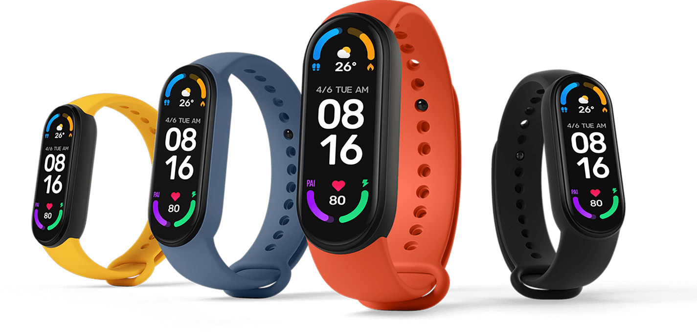

Видна каждая деталь
Благодаря тому, что новый AMOLED-дисплей трекера отличается не только большим размером, но и высокой плотностью пикселей (326 ppi), вы можете установить в качестве фона изображение любимого человека, домашнего животного или вашего любимого произведения искусства. Чтобы каждый раз, когда вы поднимаете запястье, ваш день казался ярче.
